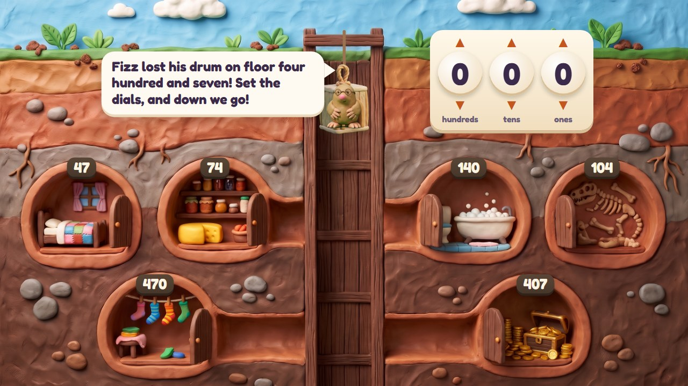
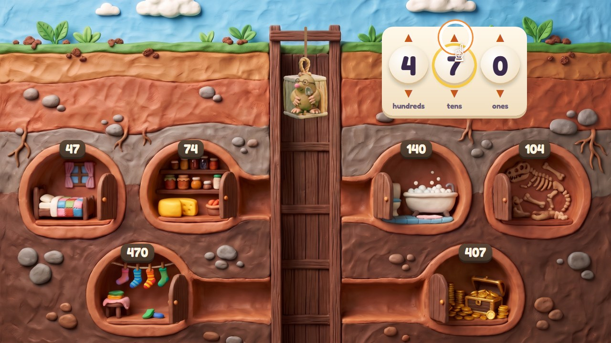
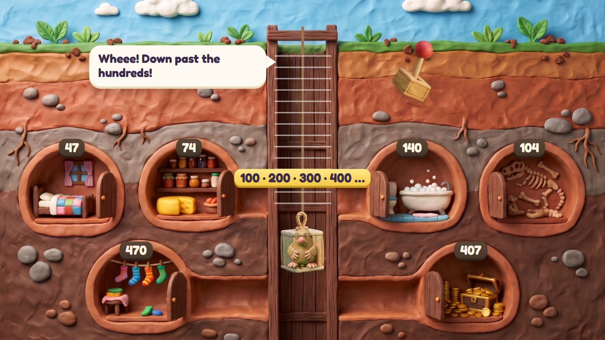
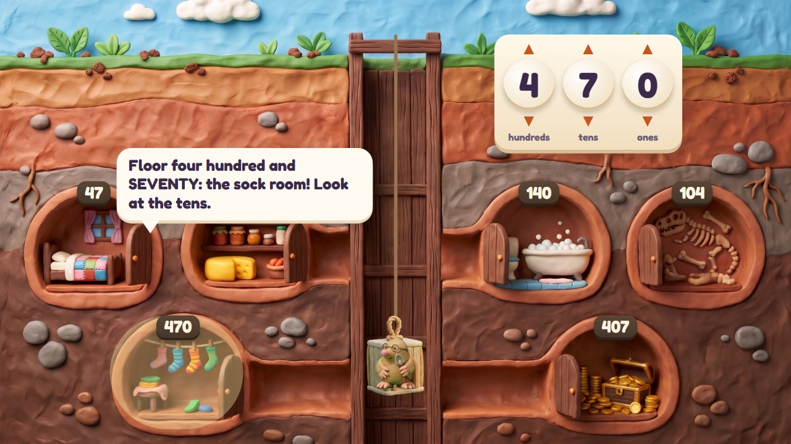
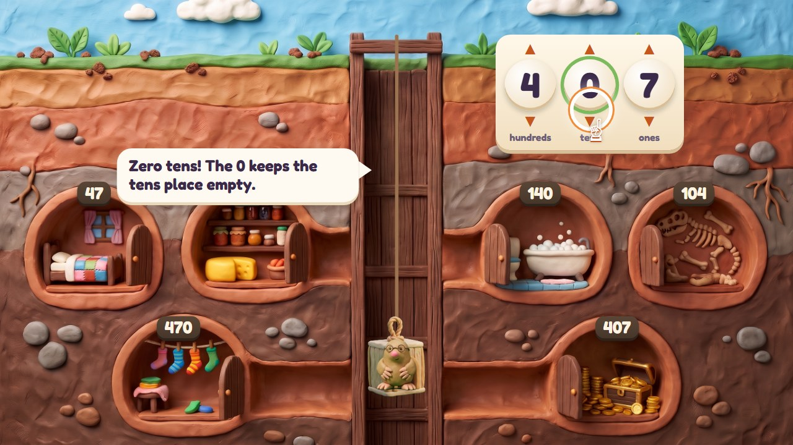
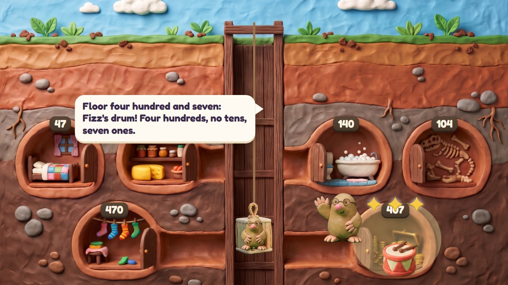
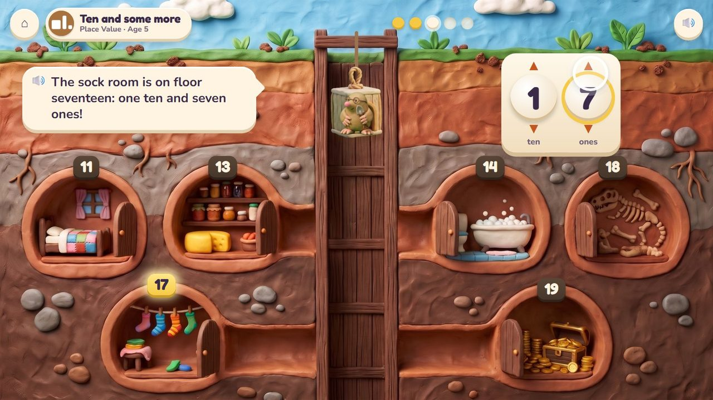
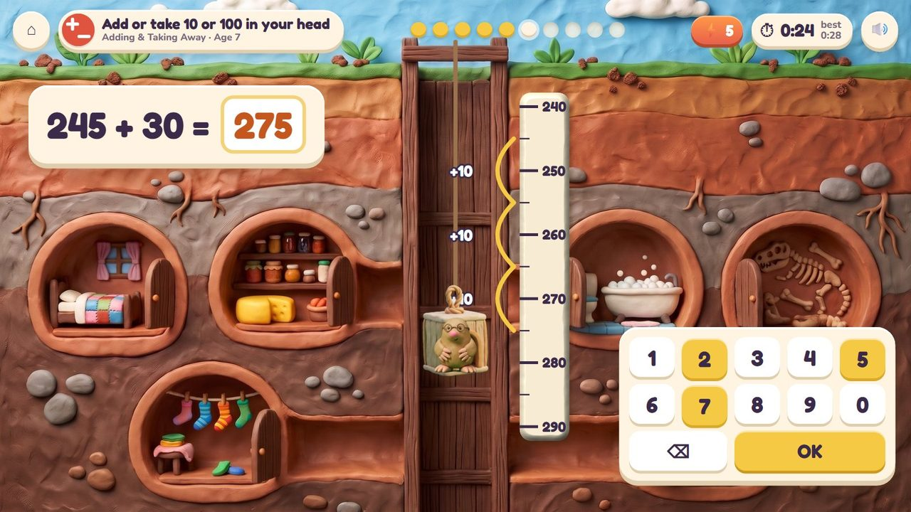
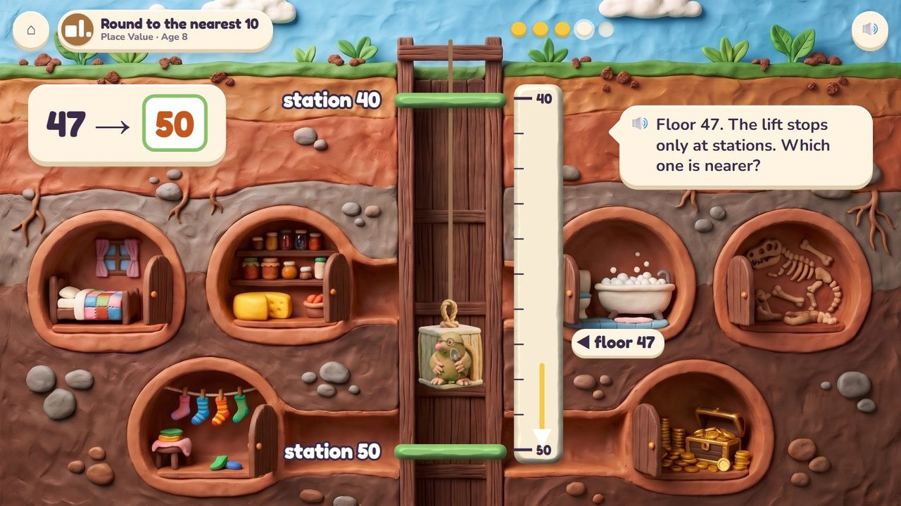
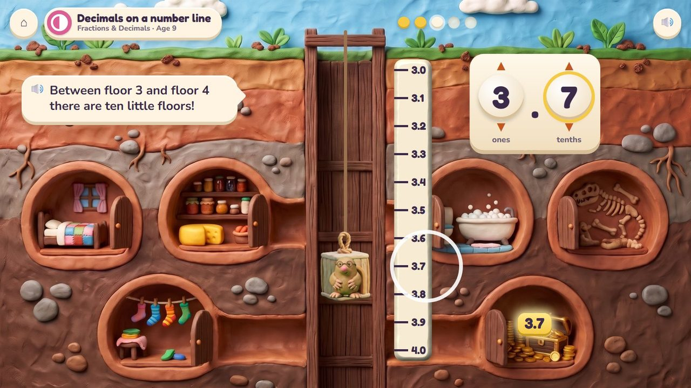

Set the dials, and Digsy's lift rides down to that floor.
72 lessons (49 taught here first, the rest practised here) in 7 topics:
Counting & NumbersAdding & Taking AwayTimes & SharingPlace ValueFractions & DecimalsMeasuringPatterns & Graphs

Digsy's burrow is a tall building under the ground. To reach a room the child sets the lift's dials (hundreds, tens, ones; later thousands and tenths) and the lift rides down the shaft; a wrong digit opens a funny wrong room (470 is the sock room, 407 has Fizz's drum). The shaft has a number line beside it, so 10 more, jumps, rounding to the nearest station and decimals between two floors can all be seen.
Turn the dials, pull the lever; drag the lift along the line.
Every room found today lights up on Digsy's burrow map.
A storyboard of the game in one lesson, drawn from the app's own clay pictures.
Digsy's burrow with its numbered rooms; the dials at 000.
🔊 “Fizz lost his drum on floor four hundred and seven! Set the dials, and down we go!”

Four hundreds, seven tens…

The lift rides down past the hundreds.
🔊 “Wheee! Down past the hundreds!”

470 is the sock room: look at the tens.
🔊 “Floor four hundred and SEVENTY: the sock room! Look at the tens.”

The 0 keeps the tens place empty.
🔊 “Zero tens! The 0 keeps the tens place empty.”

Floor 407: Fizz's drum.
🔊 “Four hundreds, no tens, seven ones.”
The lift is at a floor: type where it ends after a jump (245 + 30), or which station is nearest. Ten questions at 6-7, a 60-second round from 8; your time and your best on screen; only right answers count; a miss shows the answer and comes back later. No clock under 6.
The badge at the top left says the topic, the lesson and the age.

The sock room is on floor 17: one ten and seven ones.

The quick round: from 245, down 30: three jumps of ten to 275. Timed.

The lift stops only at stations: floor 47 is nearer to 50.

Between floor 3 and floor 4 there are ten little floors: 3.7.
| Age 5Kindergarten | Numbers to 20: a ten lever and the ones dial; count to 100. |
| Age 6Grade 1 | Tens and ones to 120; 10 more and 10 less; compare with >, = and <. |
| Age 7Grade 2 | Hundreds, tens and ones; 300 + 40 + 5; jumps of 10 and 100; numbers on a number line. |
| Age 8Grade 3 | Round to the nearest 10 and 100 (stations); fractions on a number line. |
| Age 9Grade 4 | Big numbers (a thousands dial); decimals: tenths and hundredths between floors. |
| Age 10Grade 5 | Decimals to thousandths; ten times and one tenth; rounding decimals. |
tens and ones, then hundreds, thousands, a decimal point and tenths
every floor, then every ten, every hundred, or tenths between two floors
the wrong room is funny, not wrong: Digsy points at the digit that sent you there
the dials; the number pad for the quick round
Age by age they are on the full list; here grouped by topic (the first activity named teaches a lesson, the others practise it).
K.CC.1Poke Pals · Number LiftK.CC.1Number Lift · Poke PalsK.CC.1Number Lift · Poke PalsK.CC.2Number Lift · Poke PalsK.CC.3Peek-a-Peep · Number LiftK.CC.4Poke Pals · Number LiftK.CC.7Seesaw Twins · Number Lift1.NBT.1Number Lift · Poke Pals1.NBT.1Number Lift · Peek-a-Peep1.OA.5Number Lift · Poke PalsextraNumber Lift · Poke Pals2.NBT.2Number Lift · Treasure Shop2.NBT.2Number Lift1.OA.6Poke Pals · Number Lift1.OA.6Number Lift · Poke Pals1.OA.6Poke Pals · Number Lift2.NBT.5Number Lift · Poke Pals2.NBT.5Poke Pals · Number Lift2.NBT.5Number Lift · Treasure Shop2.NBT.5Poke Pals · Number Lift2.NBT.7Number Lift · Seesaw Twins2.NBT.7Number Lift2.NBT.8Number Lift · Drum Stage3.NBT.2Number Lift · Treasure Shop3.NBT.2Number Lift · Treasure Shop3.OA.8Number Lift · Treasure Shop4.NBT.4Number Lift · Treasure Shop4.NBT.4Number Lift · Treasure Shop3.NBT.3Drum Stage · Number Lift4.OA.4Drum Stage · Number Lift4.NBT.1Drum Stage · Number Lift4.OA.3Number Lift · Treasure ShopK.NBT.1Poke Pals · Number Lift1.NBT.2Poke Pals · Number Lift1.NBT.2Poke Pals · Number Lift1.NBT.3Seesaw Twins · Number Lift1.NBT.5Number Lift · Drum Stage1.NBT.4Poke Pals · Number Lift1.NBT.4Number Lift · Poke Pals1.NBT.6Number Lift · Drum Stage2.NBT.1Number Lift · Seesaw Twins2.NBT.1Number Lift · Poke Pals2.NBT.3Number Lift2.NBT.3Number Lift · Seesaw Twins2.NBT.4Number Lift · Seesaw Twins3.NBT.1Number Lift3.NBT.1Number Lift4.NBT.1Number Lift · Seesaw Twins4.NBT.2Number Lift4.NBT.2Number Lift4.NBT.2Number Lift · Seesaw Twins4.NBT.3Number Lift5.NBT.1Number Lift5.NBT.2Number Lift · Drum Stage5.NBT.2Drum Stage · Number Lift5.NBT.3Number Lift5.NBT.3Number Lift5.NBT.3Number Lift · Seesaw Twins5.NBT.4Number Lift3.NF.2Number Lift · Bridge Builders4.NF.2Smoothie Stand · Number Lift4.NF.3Smoothie Stand · Number Lift4.NF.3Smoothie Stand · Number Lift4.NF.6Number Lift · Treasure Shop4.NF.6Number Lift · Bridge Builders4.NF.7Number Lift · Seesaw Twins5.NBT.7Treasure Shop · Number Lift2.MD.4Bridge Builders · Number Lift2.MD.6Number Lift · Bridge BuildersextraNumber Lift · Critter Maker4.OA.5Number Lift · Garden Beds5.OA.3Garden Beds · Number Lift